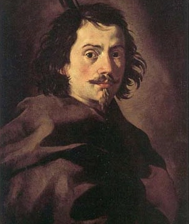
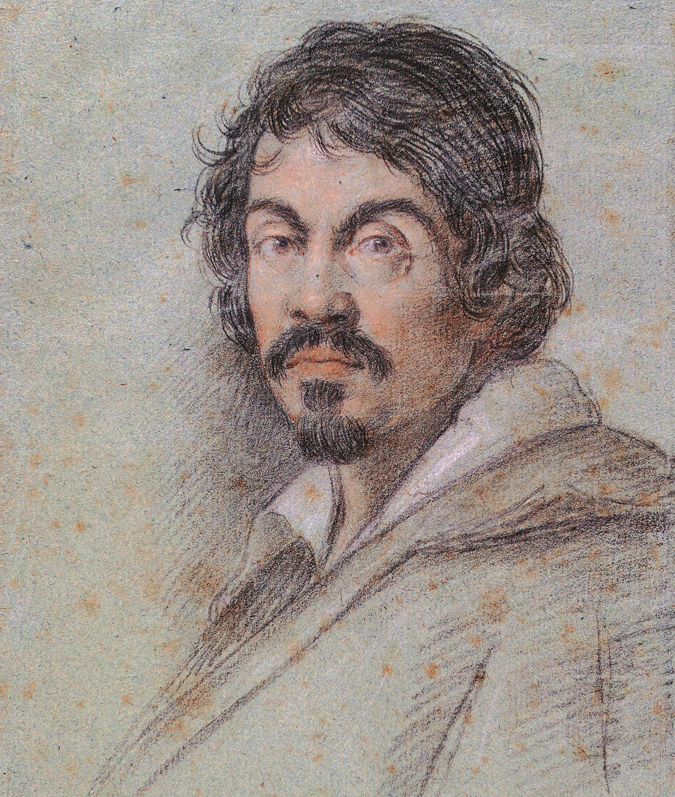
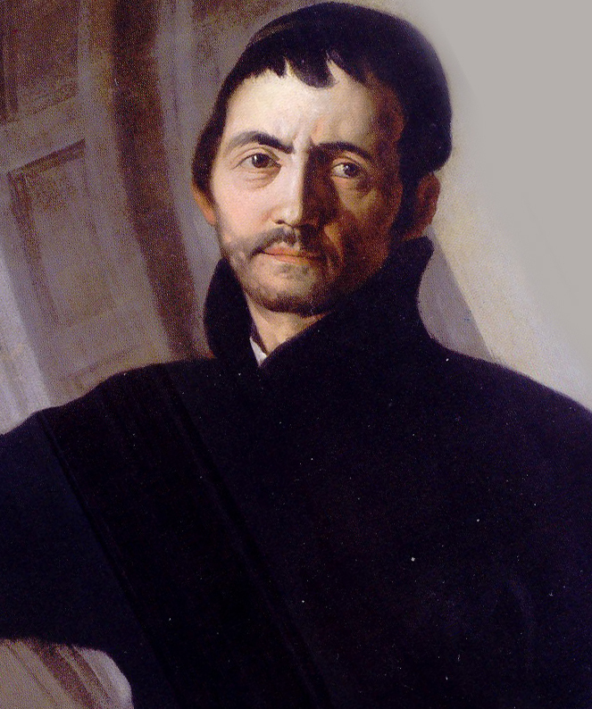
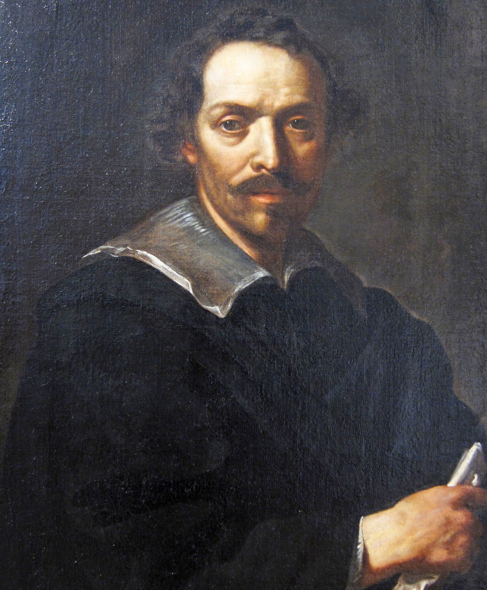

BAROCCO
Homepage
Esponenti
Sculture
Architettura
Dipinti
Gian Lorenzo Bernini
Nascita: 7 Dicembre 1598, Napoli
Morte: 28 Novembre 1680, Roma
Strutture:
- Piazza San Pietro
- Fontana dei Fiumi
Sculture:
- David
- Apollo e Dafne
- Ratto di Proserpina
Francesco Borromini
Nascita: 25 Settembre 1599, Svizzera
Morte: 2 Agosto 1667, Roma
Strutture:
- Chiesa di Sant'Ivo alla Sapienza
- Palazzo Barberini
- Chiesa di San Carlino alle Quattro Fontane


Michelangelo Merisi da Caravaggio
Nascita: 29 Settembre 1571, Milano
Morte: 18 Luglio 1610, Porto Ercole
Dipinti:
- Deposizione
- Giuditta e Oloferne
- Canestra di frutta
Andrea Pozzo
Nascita: 30 Novembre 1642, Trento
Morte: 31 Agosto 1709, Austria
Opere:
- Soffitto Chiesa di Sant'Ignazio
- Chiesa dei Gesuiti
- Cattedrale di San Nicola


Pietro da Cortona
Nascita: 1 Novembre 1596, Cortona
Morte: 16 Maggio 1669, Roma
Opere:
- Chiesa di Santa Maria della Pace
- Chiesa dei Santi Luca e Martina
- Trionfo della Divina Provvidenza